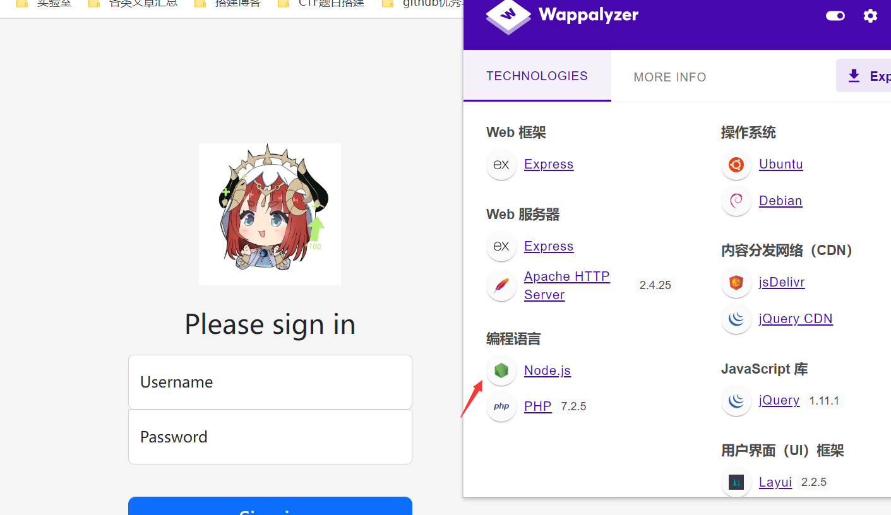

攻防世界-wife_wife
最后更新时间:
文章总字数:
预计阅读时间:
题目描述：
cat-wifi
本题不需要爆破
题目解题：
打开是一个登录页面，先测试弱口令，没用，于是扫网站的同时，看看会不会是sql，测试一番啥也没有，源代码也没信息，那就看看注册页面
这里也没啥利用的，就是有个is admin的按钮，输入有效邀请码才能进入，这思路很明显，就是以管理员的身份登录进去肯定就能得到flag。唉，我也就分析到这儿了，同时抓包看了看
发现是个json数据格式，但没啥思路无从下手，还是靠wp度日吧。。。
看了wp发现是原型链污染。。。虽然说做过类似的题，但并不擅长
原型链污染
造成这个漏洞的有一个很重要的前提，这题目的后端是node.js来写的，也就是说后端不是php服务器，不是java服务器，而是JavaScript服务器
因为是JavaScript语言来处理后端+用JavaScript的那个函数来处理，所以才有这个漏洞产生
如下代码，prototype是newClass类的一个属性。newClass 实例化的对象 newObj 的 .proto 指向 newClass 类的 prototype
1 | |
JSON 解析的情况下，proto 会被认为是一个真正的“键名”，而不代表“原型”。如果是let o2 = {a: 1, “proto”: {b: 2}}则__proto__会被认为是o2的原型。如果作为键名（不会被解析）就会作为子类的原型
let o1 = {}
let o2 = JSON.parse('{"a": 1, "__proto__": {"b": 2}}')
merge(o1, o2)
console.log(o1.a, o1.b)o3 = {}
console.log(o3.b)
merge用于合并对象
merge 操作是最常见可能控制键名的操作，也最能被原型链攻击，很多常见的库都存在这个问题。
看一下实例：
1 | |
可问题是，后端服务器是JavaScript，我们通过post发送过去的 json是字符串，JavaScript需要通过JSON.parse()函数才能把 json字符串转成对象
1 | |
题目源码
跟着wp学学源码
1 | |
看了这部分源码能判断出，如果这个登陆的对象里，isAdmin的属性是true，那就证明是一个管理员，如果是普通注册的用户，isAdmin属性是false，那我们直接修改user原型的属性的值，那么该类的属性的值也就随着变了，payload如下
1 | |
成功拿到flag
不过看了很多文章也没人说明是如何发现原型链的，看来应该是佬们做题多了的直觉吧。。。，不过倒是可以靠如下的插件看到这里用的是node.js语言，并且也没有数据库。
